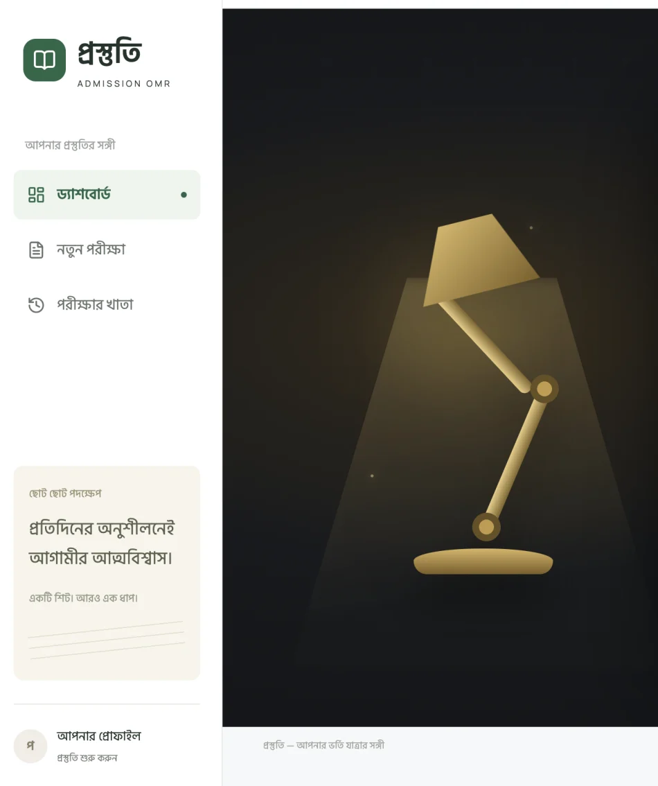
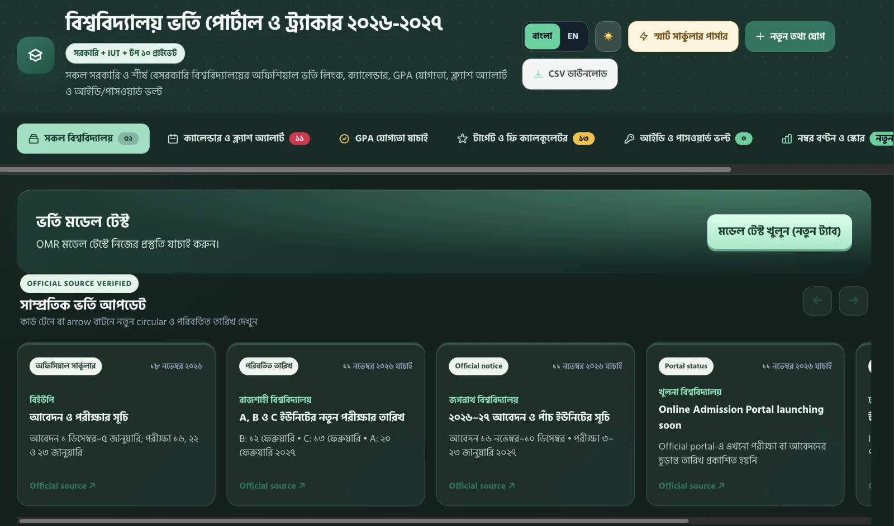
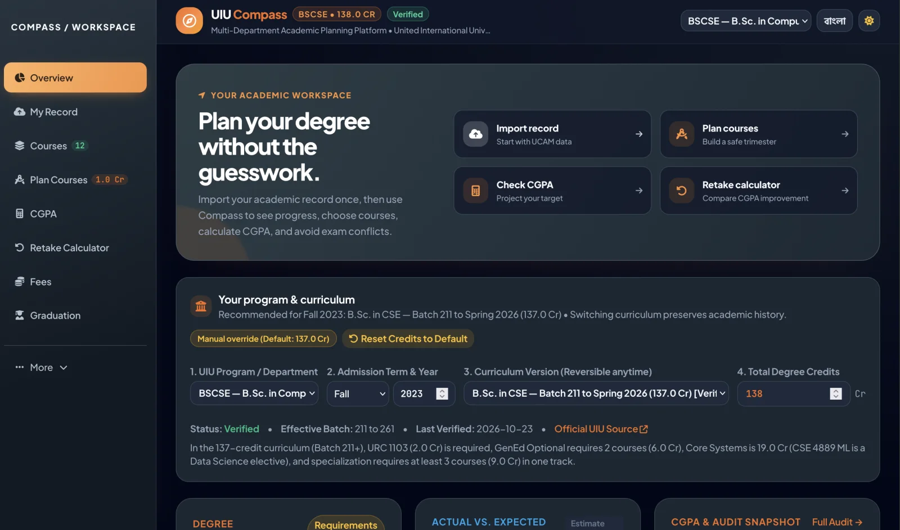
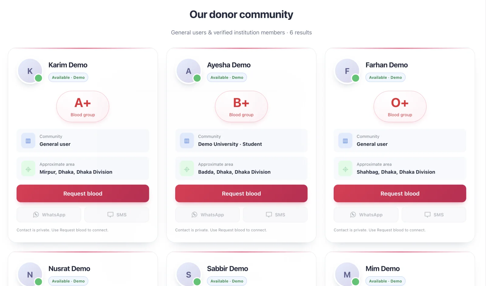
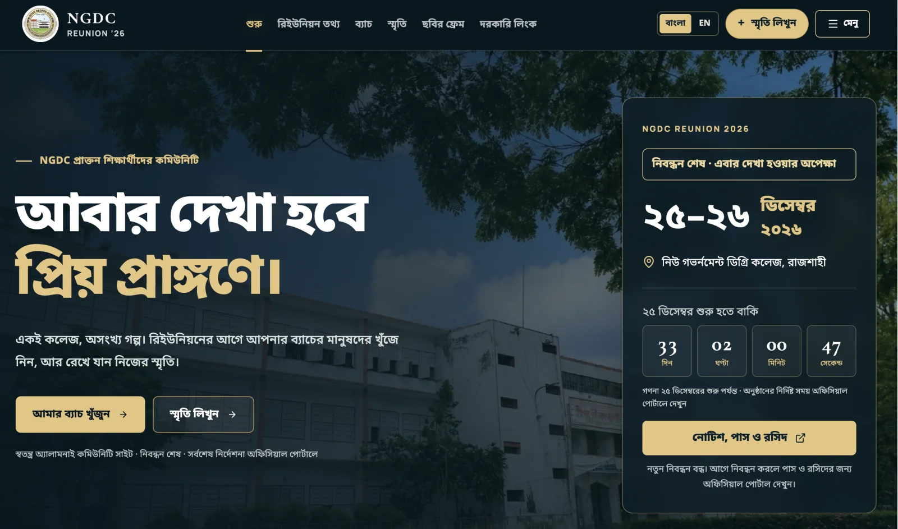

CSE undergraduate at UIU, majoring in Software Engineering.
I study how information moves through everyday services, from matching blood donors to planning EV charging routes in Bangladesh.
Things I’ve built.
Live apps and prototypes for students, donors and drivers in Bangladesh. Hover a row to preview it.

Focus on TargetA university admission tracker with application dates, eligibility checks and exam clash alerts.Vercel↗
UIU CompassPlan courses, estimate CGPA, compare retakes and track graduation requirements.Vercel↗
BloodBridge BDDonor search by blood group and area, with a directory of demo profiles. Still in progress.PHP, MySQL↗
NGDC Reunion 2026The event website for the 2026 New Government Degree College reunion.Netlify↗
ChargeBDMy final-year concept: EV station availability, time-slot booking and an operator dashboard for Bangladesh.In progress↗Also: Career Copilot Lab in Python and Streamlit, Mayor’s Rise in Java, and browser games in Canvas.
Technical toolkit.
Grouped by where each tool fits in my workflow, with honest levels instead of percentages.
- Comfortable
- C, HTML and CSS, Git and GitHub
- Learning
- Python, PHP, Java, JavaScript, SQL, Streamlit, Figma
- Foundation
- Data modelling, normalization, networking
Beyond the classroom.
Coursework gives me the fundamentals. Volunteering and club work taught me coordination.
Graduating Summer 2027
BSc in Computer Science and Engineering
United International University, Dhaka
HSC, Science, 2020
New Govt. Degree College, Rajshahi. GPA 5.00
SSC, Science, 2018
Naogaon Krishnadhan Govt High School. GPA 5.00
Deputy Logistics
UIU Social Services Club. Event logistics, volunteers and materials.
General Member
UIU App Forum. Workshops, seminars and tech activities.
Founder and Volunteer
Relief during COVID-19 and floods, plus support for underprivileged children.
General Secretary
National Children’s Task Force, school branch.
Let’s build something useful.